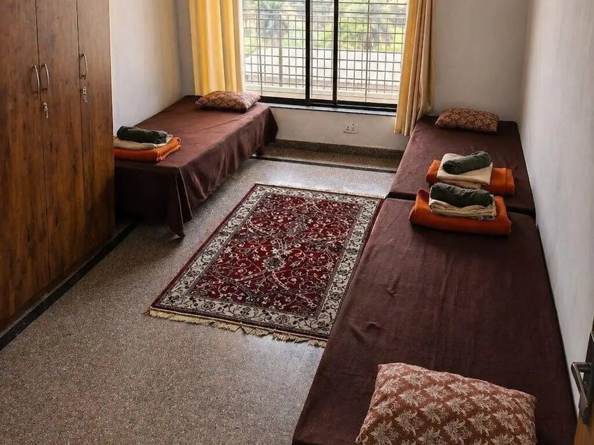
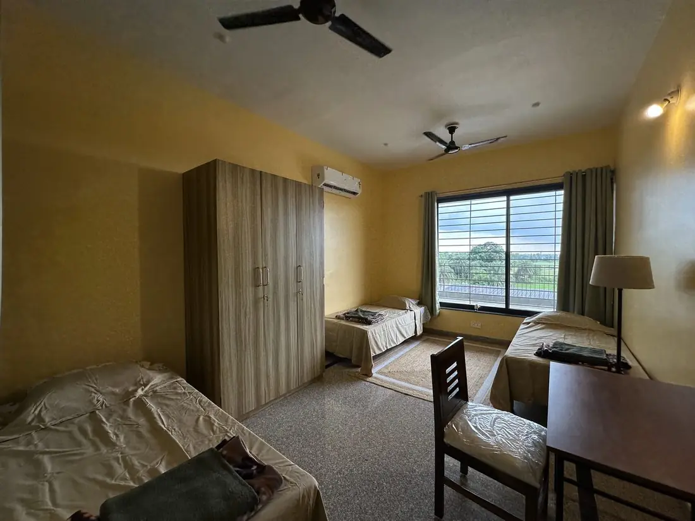
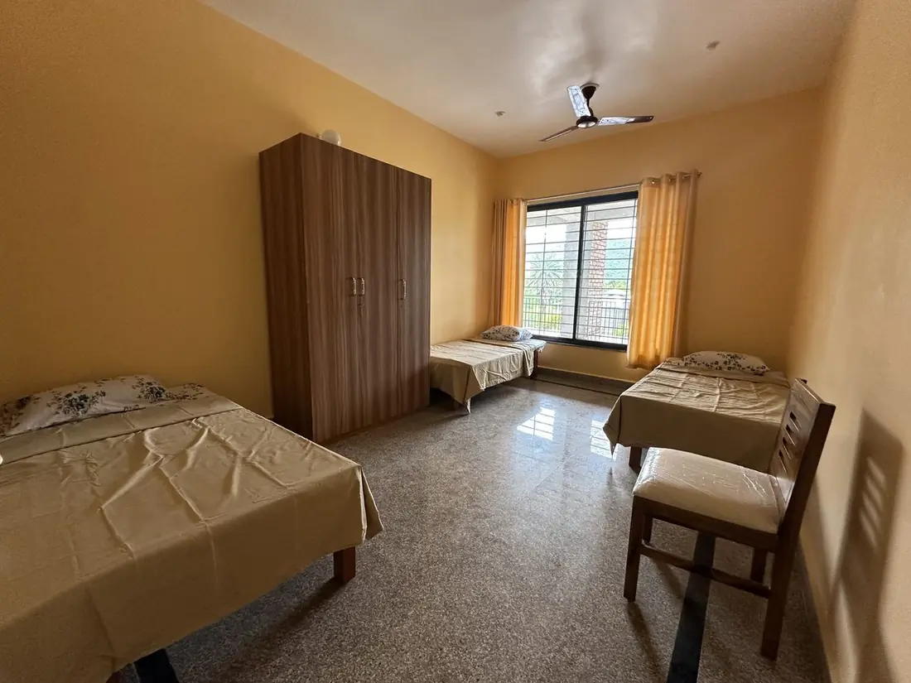
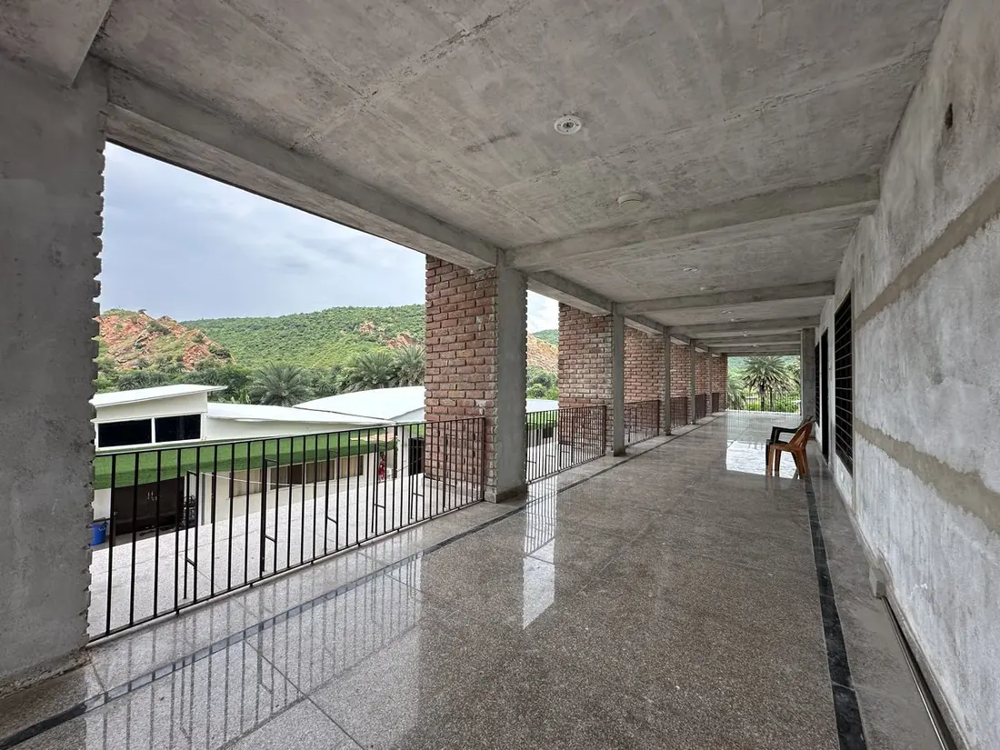

Стандарт
Баланс комфорта и общения: рядом другие участники
- 3 человека
в номере - 3 кровати
односпальные
Early Birds −10%до 15 декабря
7 дней детокса1–7 марта · за человека
обычная цена $690$621примерно 50 300 ₽
Всё включено жильё, питание, процедуры, йога и медитации
Не решили? Эти дни можно добавить и позже, уже после брони.
Предоплата онлайн сейчасостальное по приезде
$200примерно 17 000 ₽